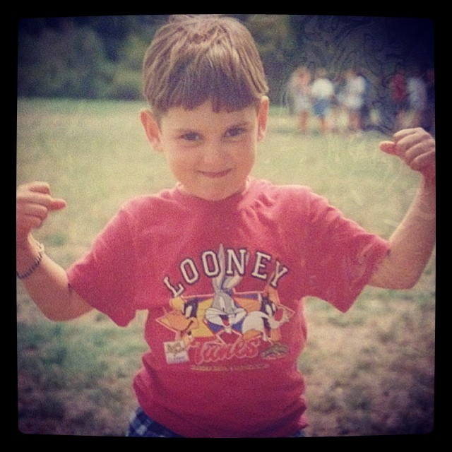
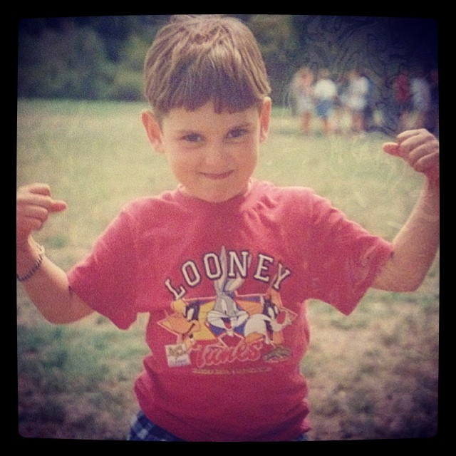

Jesse Hoare Evans
Intro
 
Here is a little information that might help people get to know me. The goal of this website is to explain a brief background on myself as well as also informing you of some of my intersets and things I am currently doing. I am originally from Australia but have been living in the US for 11 years now. I became a citizen in July of 2014. As you can probably tell by this point I am a world citizen and love travelling. I also love eating good food, this ranges from good Thai, to pizza to a new personal favourite on wet and cold Seattle days, pho! I hope that this page explains and shows a little bit about me!

Here is a little information that might help people get to know me. The goal of this website is to explain a brief background on myself as well as also informing you of some of my intersets and things I am currently doing. I am originally from Australia but have been living in the US for 11 years now. I became a citizen in July of 2014. As you can probably tell by this point I am a world citizen and love travelling. I also love eating good food, this ranges from good Thai, to pizza to a new personal favourite on wet and cold Seattle days, pho! I hope that this page explains and shows a little bit about me!
About Me

I am not to sure what to write here so I will just list off a few things that are interesting about me that I have not covered elsewhere
- I recently got engaged to my longtime girlfriend (that is her in the photos)
- I love to travel, the picture at the bottom is from a recent trip my fiance took, in Dublin from the guinness storehouse
- I am the 4th of 5 children
- I went to school and studied Criminal Justice at WSU, Go Cougs!
- Up until about 2 years ago I used to play rugby
- I used to brew beer, but I still enjoy drinking it!
- I am a certified scuba diver!
- My favourite color is green.

Background

I was born in Sydney, Australia in 1992 and moved to Melbourne when I was around 2. I lived there until I was 10 when my family moved to the UK. I lived there for 2 more years before moving back to Melbourne for another year. After that I came stateside and apart from a brief 6 month period where I resided in Belgium I have lived here ever since.
The reason that I am now enrolled at Epicodus is because I woke up and day and decided that I needed a change. I finished school a few years ago now and did not really like the direction in which my work life was going. I talked to some people in the tech industry and liked what they said about it. I then did some research on different coding "bootcamps" and really liked the sound of how Epicodus is planned out so I did my best to make it happen, and as they say "the rest is history".

Epicodus Projects

Below is a list of different projects that I have done during my first week in order of completion (oldest to most recent project).
- Hello World
- Travel
- Cupcakes
- Wikipedia
- This was the first project that I worked on. It was a simple website using html where we said "hello world" in 5 different languages. After that we added "goodbye world" in Japanese and Pig latin.
- My resort webpage. This was a great assignment because we had to build a home page and also hyperlink 5 other webpages to this site. We also got to practice branching and merging (this was the 2nd branch that we made) as well as having a stylesheet.
- For this assignment we were tasked with creating a website for a cupcake shop. We needed to incorporate images, text and links. We also needed to practice creating classes with CSS rules to make certain images or phrases stand out.
- Our final project of the week. This project asked us to incorporate bootstrap to help make our "dummy" wikipedia page look like the real wikipedia. We utilized, divs, spans, floats, and classes as well as a grid. Overall this was a challengiung yet extremely rewarding project.

Interests/Hobbies

I have a number of interests and hobbies, you can see some of them below.